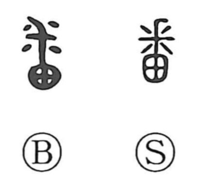

番

Kun: | On: ban, han
number ・ order ・ turn ・ watch ・ duty
Explanation
番 pictures an animal's paw. The upper 釆-like element represents the claws, while 田 below depicts the pad or palm of the foot. The whole concerns the paw's underside, where the bare pad is visible.
A paw moves quickly and repeatedly, and the sound family includes fluttering, turning, and other agile movements. Alternating steps provide a connection with taking turns and doing something in succession. From this come a turn of duty, a position in a sequence, and a numbered occasion.
Two things acting alternately can form a pair. This is the sense retained in 蝶番, a hinge joining two sides. Other related words develop the paw's pale, hairless surface or the curling and gathering associated with movement.